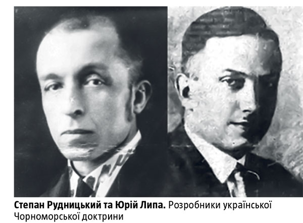

Чорне море в геополітичних візіях українців
Як історично формувалася морська стратегія України
Населення, яке з давніх-давен мешкало на теренах сучасної України, спочатку на рівні практик повсякденного життя, а потім різних політичних концепцій розуміло виняткове значення Чорного моря. Воно із самого початку й до сьогодні сприймалось як елемент системи сполучення цих територій із Європою, Азією, а згодом і всім світом. Недарма Степан Рудницький, відомий український історик, географ і геополітик, порівнював Чорне море та систему українських річок чорноморського басейну із цибулиною: коріння її через протоки Босфор та Дарданелли доходило до Середземного моря й Атлантики, а своїми пір’їнами-стеблинами (річками) вона сполучала величезну територію аж до північно-східного узбережжя Балтійського моря.
Давній вектор
Чорне море ще з VIIІ–VII століть до н. е. відігравало велику роль у поширенні грецької колонізації, сприяючи появі та поступовому впливу на місцеве населення різних часів досягнень греко-римської цивілізації. Потім чорноморсько-азовське узбережжя на довгі століття перетворилося на широкий коридор, яким рухалися численні різноетнічні спільноти, всмоктуючи ці впливи й додаючи своїх. За часів Русі стійкий інтерес до Причорномор’я виявляв князь Святослав. Завдяки його зусиллям було приєднано племінні союзи уличів та тиверців і включено до складу Давньоруської держави чорноморське узбережжя між Прутом та Дніпром. Одним із позитивних наслідків розгрому військом князя Хазарського каганату вважали недопущення зростання економічного значення торгового шляху по Волзі всупереч старому шляху «з варяг у греки» по Дніпру. Свій геополітичний інтерес до Причорномор’я мав і Роман Мстиславич, який заснував Малий Галич неподалік місця впадіння Прута в Дунай, що далі, в обхід половецьких орд, сполучав Галицько-Волинську державу з Чорним морем. Литовський князь Вітовт Кейстутович, під владою якого у XIV столітті опинилися Волинь, Київщина, Поділля, Чернігово-Сіверщина, також вбачав у встановленні свого контролю над чорноморським узбережжям не лише приріст територіальних надбань, реалізацію економічних інтересів литовських князів, а й політичні можливості протистояння Заходові (Тевтонському ордену) та Сходові (Московському князівству). Не секрет, що саме Вітовт доклав своїх зусиль до появи самостійного Кримського ханства, яке спочатку виступало союзником Великого князівства Литовського й лише через кілька десятків років визнало себе васалом Османської імперії.
Гетьманська геополітика
Особливого значення із XVI століття набуло Чорне море й у візії запорозьких козаків, а згодом українських гетьманів. Українські історики неодноразово наголошували на формуванні протягом XVII–XVIII століть двох основних концепцій розуміння та використання чорноморського басейну та прилеглих територій в інтересах України-Гетьманщини. Перша з них, що походила з часів Хмельницького — Дорошенка — Самойловича, передбачала дотримання рівноваги сил у регіоні, яка повинна була опиратися на порозуміння з Туреччиною й Кримом, використання їхньої військової сили проти Речі Посполитої та Московії. Прибічники цієї концепції наполягали на тій користі, яку можна було б мати з ідеї дотримання нейтралітету та взаємовигідної торгівлі між Запорожжям, Гетьманщиною і Кримом. Олександр Оглоблин називав цю стратегію «концепцією мирного розв’язання чорноморської проблеми». У першій половині свого гетьманування цієї концепції дотримувався й Іван Мазепа. Із другої половини XVII століття в умовах нав’язаної країнами Західної Європи антитурецької коаліції почала формуватися друга чорноморська концепція, що мала як прихильників, так і противників. Спиралася вона на давнішню ідею боротьби християнського та мусульманського світів, подолання османської могутності силами православного Сходу, ідею виходу Гетьманщини на чорноморське узбережжя, закріплення там і поширення через Чорне море політичних контактів із Європою й Азією.
Особливого значення із XVI століття набуло Чорне море й у візії запорозьких козаків, а згодом українських гетьманів. Українські історики неодноразово наголошували на формуванні протягом XVII–XVIII століть двох основних концепцій розуміння та використання чорноморського басейну та прилеглих територій в інтересах України-Гетьманщини. Перша з них, що походила з часів Хмельницького — Дорошенка — Самойловича, передбачала дотримання рівноваги сил у регіоні, яка повинна була опиратися на порозуміння з Туреччиною й Кримом, використання їхньої військової сили проти Речі Посполитої та Московії. Прибічники цієї концепції наполягали на тій користі, яку можна було б мати з ідеї дотримання нейтралітету та взаємовигідної торгівлі між Запорожжям, Гетьманщиною і Кримом. Олександр Оглоблин називав цю стратегію «концепцією мирного розв’язання чорноморської проблеми». У першій половині свого гетьманування цієї концепції дотримувався й Іван Мазепа. Із другої половини XVII століття в умовах нав’язаної країнами Західної Європи антитурецької коаліції почала формуватися друга чорноморська концепція, що мала як прихильників, так і противників. Спиралася вона на давнішню ідею боротьби християнського та мусульманського світів, подолання османської могутності силами православного Сходу, ідею виходу Гетьманщини на чорноморське узбережжя, закріплення там і поширення через Чорне море політичних контактів із Європою й Азією.
Незважаючи на те що вже з другої половини XVIII століття боротьба за вихід до Чорного моря й перетворення його на внутрішнє море здійснювалися інтелектом українських стратегів, велися зброєю та освячувалася кров’ю українських козаків, наслідками перемог скористалися інші. Результатом упровадження розробленого етнічним українцем Олександром Безбородьком так званого грецького проекту, тобто ідеї остаточної ліквідації Османської імперії, створення на її теренах нової Візантії та посадження на її престолі представника роду Романових, стало те, що у 1783 році Кримське ханство, а потім, у 1791-му, землі між Південним Бугом та Дністром остаточно ввійшли до складу не української Гетьманщини, завчасно ліквідованої ще 1764 року, а Російської імперії. Відтоді й майже до кінця Першої світової війни економічну користь від експлуатації ресурсів Причорномор’я та Чорного моря, а також політичні преференції, як-от можливість впливу на тогочасну європейську політику, мала чужа держава. Українцям же вкладали в голову, що Чорне море й причорноморські землі з Кримом — це не їхній геополітичний інтерес.
Україна як причорноморський простір
Натомість саме розвиток політичної та антропологічної географії на початку ХХ століття посприяв актуалізації цього питання. Досягнення українських учених у цих галузях сприяли формуванню українцями стійкого уявлення про межі розселення свого етносу, про колонії, створені українцями далеко за межами України, зокрема в Росії, а також про території, що є стратегічно важливими для українців, які прагнуть власної та незалежної держави. Бо, як стверджував Степан Рудницький, географічною основою будь-якої держави є територія та природні ресурси, а соціологічною та правовою — людність, яка цю територію населяє. Зрощення одного й другого дає в підсумку цілісний організм.

Однак таке розуміння тогочасними українськими політиками самої ідеї незалежної держави, її правдивих і природних кордонів з’явилося не одразу. Навпаки, текст ІІІ Універсалу Української Центральної Ради від 7 листопада 1917 року прямо вказував на відсутність усвідомлення важливості Чорного моря та Криму керівниками УНР. У тексті документа читаємо: «…До території Народної Української Республіки належать землі, заселені у більшості українцями: Київщина, Поділля, Волинь, Чернігівщина, Полтавщина, Харківщина, Катеринославщина, Херсонщина, Таврія (без Криму)…» Натомість уже через півроку на засіданні уряду Української Держави Павла Скоропадського 7 травня 1918-го під час розгляду питання про кордони України, було зазначено:
«...Признать границами первоначальную намеченную на карте, представленной военным министром, границу с соответствующею этнографическим условиям, причем обратить особое внимание на необходимость присоединения Крыма к Украине».
У 1920-х роках Степан Рудницький у більшості своїх наукових праць, а також у публіцистиці, присвяченій проблемам розселення українців, кордонам Української держави, аналізові української справи з погляду політичної географії, постійно в різний спосіб повторював свої провідні ідеї, які мав усвідомити кожен українець, а тим більше іноземець: Україна «обіймає окремий, суцільний простір на півдні Східної Європи», вона є «самостійним державним організмом», через розташування між Європою та Азією Україна повинна була «піти своєрідним шляхом розвитку, шляхом, що був і є цілком відмінним від розвиткового шляху держав Середньої і Західної Європи».
Ідеї Степана Рудницького після його фізичного знищення в 1937 році радянською владою підхопив Юрій Липа. У своїх працях початку 1940-х він сформулював цілісну Чорноморську доктрину, яка широкому загалові українців була маловідома, бо її автора вбили солдати загону НКВД в 1944-му. Натомість головні ідеї автора доктрини збігалися з думками його попередника й розвивали їх у нових на той час політичних умовах. Юрій Липа зазначав, що Україна — передусім причорноморський простір, із геополітичного погляду для української державності необхідні як Чорне море, так і його верхів’я. У такий спосіб стає зрозумілим, що вісь, навколо якої може і повинна розвиватися українська політична будучність, — це не Схід — Захід, а Північ — Південь. Це, на думку мислителя, «найатракційніша геополітична вісь на просторах між Балтикою та Уралом». Із татарами й турками, як писав Липа, варто було не воювати, а дружити, бо це відповідало інтересам України. Відтак оборона осі Південь — Північ повинна була стати найважливішим завданням України в історії. І, нарешті, головне. Політичний заповіт Юрія Липи звучав так: «...Не дозволяти розвиватись Балтійсько-Волзькій магістралі, зморі (тобто пригніченому стану, занепаду. — О. К.) Києва».
Інтермаріум сьогодні
Нині, намагаючись осмислити й використати в сучасних умовах відомі концепції щодо ролі Чорного моря в історії Української держави, політикам варто порадити обережно ставитися до першоджерел та спроб їх потрактування. У «чистому» вигляді ці концепції вже не придатні до використання. Водночас у них міститься чимало принципових і важливих аспектів, які сьогодні актуалізуються й повинні бути враховані у формуванні пріоритетів зовнішньої політики України. Нинішні ідеї створення певного союзу країн Міжмор’я цілком мають право на існування. Але! На цю ідею і в Україні, і в наших сусідів на заході та півночі дивляться по-різному. Українці мають бути дуже уважними, аби не дозволити втягнути себе в хибні спілки заради чужих інтересів. Концепція Міжмор’я матиме сенс лише в тому випадку, коли вона включатиме Україну, Білорусь, Литву та Польщу за всієї різниці їхнього теперішнього стану. Це в жодному разі не може бути наднаціональне утворення.
Це лише добровільне регіональне об’єднання типу ГУАМ, яке може існувати тільки як незалежні форуми політиків, бізнесменів, науковців, освітян, діячів культури. Воно може включати лише діячів згаданого Балтійсько-Чорноморського регіону, для чого існує як географічне, так і давнє історичне підґрунтя. Ніяке зміщення кордонів регіону на захід чи намагання заявити, що Міжмор’я — це об’єднання Польщі, Угорщини, Румунії, неприпустиме. Принаймні потрібно усвідомлювати, що історично підстав для такого об’єднання ніколи не було. Це лише сучасна форма відгородження від потенційно небезпечного сусіда, яким нині видається Центральній Європі Україна. Водночас недопустимо розглядати Інтермаріум як альтернативу ЄС, бо це автоматично означатиме необхідність включення до цього об’єднання Росії, що принципово змінює геополітичні координати. Варто пам’ятати, що від самого початку об’єднання країн Балтійсько-Чорноморського регіону могло виникнути й існувати лише як ідея певної буферної зони між Західною Європою та Російською імперією в усіх її формах. Водночас це не означає відмови від ситуативних контактів для будь-кого з учасників такого регіонального об’єднання із західними чи східними партнерами. Однак такі контакти повинні здійснюватися відповідально, з розумінням усіх імовірних наслідків. Власне, призначення такого об’єднання повинне полягати у виконанні ним функції запобіжника прийняттю небезпечних для всього регіону рішень, а також бути запорукою політичної, економічної та інформаційної безпеки країн-учасниць.
Отже, як доводить аналіз візій українських політичних гравців різних часів, а також учених та інтелектуалів ХХ століття, Чорне море з Кримом та геополітичне розташування українських земель над ними було і є запорукою незалежного та суверенного існування Української держави. Намагання залучити Україну до участі в безпечних для неї регіональних об’єднаннях на кшталт Міжмор’я слід усіляко вітати. Однак при цьому не варто забувати про ймовірність під час вирішення цього питання підміни понять і маніпулювання змістом історичних концепцій.